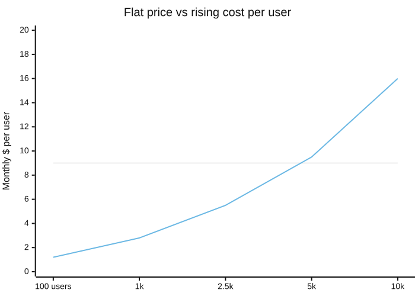

9 — Profitable at 100 users, bankrupt at 10,000
Nobody asked what happens when someone calls this 10,000 times. Two invoices arrive for that question: the attacker's, and the cloud provider's.
There are two failure modes here and one root cause. No rate limiting invites abuse; no cost model invites an organic cost inversion. Both exist because "what if someone hammers this endpoint?" never made it into the prompt. OWASP names the abuse side directly — API4:2023, Unrestricted Resource Consumption — and the mechanics are boringly simple: exposed keys, no per-user or per-IP throttle, a paywall enforced only in client-side code. Traction is usually the trigger. The same virality that should read as a growth win instead reads as "I'm under attack," because nothing was built to tell the difference between a thousand real signups and one script hitting the same endpoint a thousand times.

One endpoint, no throttle, every request billed. The meter doesn't care whether the traffic is malicious or just unbounded.
Spending caps aren't rate limits — billing enforcement lags real-time usage, so a cap is reactive where a limiter is preventive, and you need both plus a budget alert that actually pages someone. One widely reported case had a Google Cloud customer wake up to an $18,000-plus bill despite a $1,400 spending cap, because an attacker put through 60,000 requests before the cap caught up. Denial-of-Wallet is the LLM-era version of a denial-of-service attack: no data is stolen, your own paid API access is the weapon. Sysdig's research into "LLMjacking" — stolen cloud credentials used to drive an LLM at maximum quota — modelled the cost at $46,000 a day on older Claude pricing and over $100,000 a day at Claude 3 Opus-era rates.
The clearest documented case of this happening organically, no attacker required, is a builder who shared his timeline in public: on 15 March 2025 he tweeted his Cursor-built SaaS, "zero hand written code." Two days later: "guys, i'm under attack... maxed out usage on api keys, people bypassing the subscription, creating random shit on db." By 20 March, he'd shut it down and rebuilt on a no-code platform. It's simultaneously a security story and a unit-economics story — a maxed-out key is someone else's usage landing on your bill, whether they're an attacker or just a heavier user than your pricing assumed.

Cost per user rises superlinearly — power users deepen usage, and scraper traffic scales with visibility, not paying customers. The crossover is where growth starts costing you money.
This is the failure mode a CFO can actually see, which is exactly what makes it the one that ends a project rather than just embarrassing an engineer. SaaS-era pricing instincts — a flat $9 a month — meet an AI-era cost curve where every request has a real, variable marginal cost, and a16z's research puts AI-native gross margins at 50–60% against 60–80%-plus for traditional SaaS, with compute often eating a quarter or more of revenue. Unit economics invert precisely when things start working.
The fixes are solved territory, not research problems: token-bucket or sliding-window rate limiting — Cloudflare's production limiter runs at a 0.003% error rate across 400 million requests — tiered limits like GitHub's (60/hour unauthenticated versus 5,000/hour authenticated), prompt caching for roughly 90% savings on repeated context, semantic caching (one documented case took a bill from $47k/month to $12.7k/month), routing cheap work to cheap models, and treating cost-per-request as a first-class metric sitting right next to p99 latency.
If you've shipped fast with AI tools and want a second pair of eyes before it goes further, that's exactly what a vibe code audit is for.